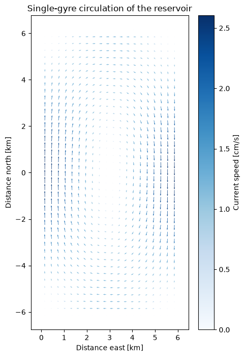
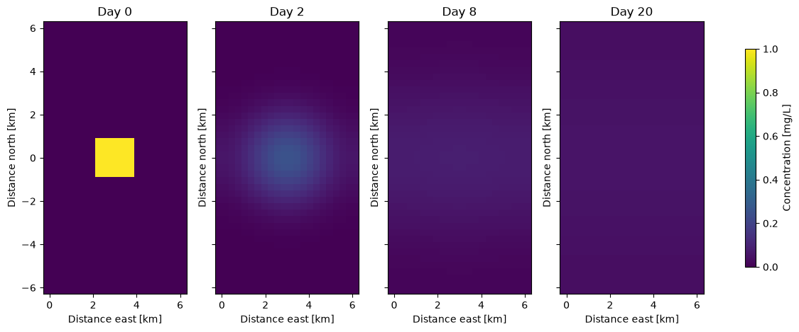
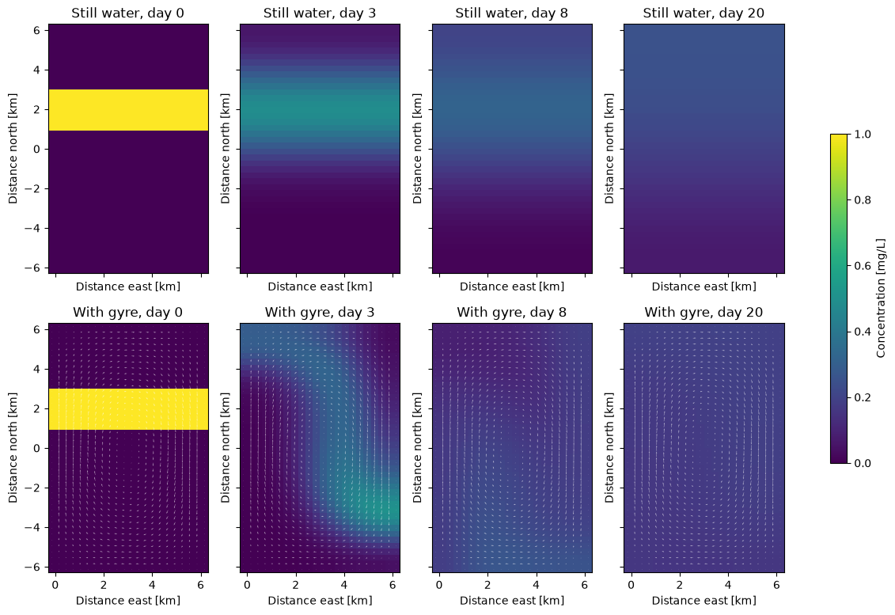
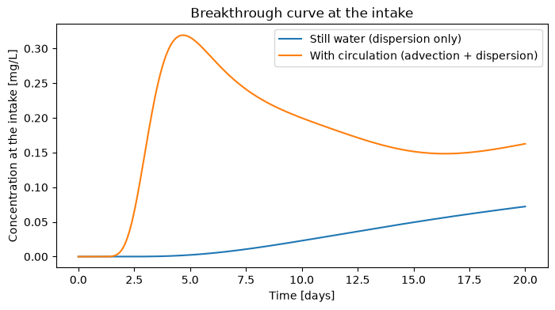

Lecture 12, Contaminant transport in a reservoir#
Applying two-dimensional advection–diffusion (Lecture 11) to a pollutant in a lake
Lecture 10 followed a pollutant down a river, where the water moves in one direction and one coordinate is enough. Lecture 11 then built the two-dimensional advection–diffusion equation, its finite-difference kernels, the no-flux ghost cells and the timestepping, and used them on ocean heat. This lecture reuses all of that machinery and asks a hydrological question instead. A reservoir, a lake, an estuary or a flooded plain is two-dimensional: water spreads sideways as well as along, and the wind or the inflow stirs it into circulation cells.
A polluted tributary enters on one side of a reservoir. Where does the plume go, and does it reach the water-supply intake on the other shore?
How much of the pollutant is diluted by dispersion and how much is carried by the circulation?
How long is the warning time at the intake, and how high does the concentration peak?
To keep the two lectures from repeating each other, this one does not re-derive the equation or the discretization. It adds what is specific to surface-water hydrology:
what \(C\) and \(D\) mean for a lake (Section 1),
a fast array version of the Lecture 11 solver (Section 2),
the shore-respecting circulation of Lecture 11 at reservoir scale, so that mass is conserved (Section 3),
stability, conservation and accuracy checks on the numerical solution (Section 4), and
the quantity a water manager actually needs, the breakthrough curve at an intake (Section 6).
# Google Colab setup: install the packages this notebook uses.
# Runs only on Colab; skipped in Binder or a local Jupyter install.
import sys
if "google.colab" in sys.modules:
%pip install -q numpy matplotlib ipywidgets
import numpy as np
import matplotlib.pyplot as plt
from ipywidgets import interact, fixed
import ipywidgets as widgets
1) From ocean heat to a dissolved pollutant#
Lecture 11 solved
for the temperature \(T\) of the ocean. Nothing in this equation says that \(T\) is a temperature: it describes any passive tracer, a quantity that is carried by the water without changing the flow. For a dissolved pollutant the dictionary is
Lecture 11 (ocean heat) |
This lecture (reservoir) |
|---|---|
temperature \(T\) |
concentration \(C\) (for example mg L\(^{-1}\)) |
eddy diffusivity \(\kappa\) |
dispersion coefficient \(D\) [m\(^2\) s\(^{-1}\)] |
ocean gyre |
wind-driven circulation cell in the reservoir |
ocean basin boundaries |
shoreline: no water and no pollutant cross it |
heat content |
pollutant mass \(M = \iint C\,dx\,dy\) (times depth) |
Three points are specific to surface-water hydrology:
Depth averaging. \(C\) and \(\vec{u}\) are averaged over the depth, which is the usual approximation for a shallow reservoir whose depth is much smaller than its width.
\(D\) is dispersion, not molecular diffusion. Molecular diffusion of a dissolved salt is about \(10^{-9}\) m\(^2\) s\(^{-1}\), completely negligible. \(D\) lumps together turbulence and the shear of the flow, and for lakes and reservoirs it is typically \(1\)–\(100\) m\(^2\) s\(^{-1}\), growing with the size of the plume (compare the dispersion coefficient of the river in Lecture 10).
Non-divergent flow. Lecture 11 used \(\nabla\cdot\vec{u}=0\) because seawater is incompressible. For a reservoir of uniform depth, with small changes in water level neglected (the “rigid lid” approximation), the depth-averaged flow is also non-divergent, so the conservation form \(-\nabla\cdot(\vec{u}C)\) and the advective form \(-\vec{u}\cdot\nabla C\) are equivalent.
As before, \(x\) points east and \(y\) points north.
2) The solver, written for speed#
We keep the discretization of Lecture 11 unchanged: centred differences for the first derivatives, the \([1,-2,1]\) kernel for
the second derivatives, ghost cells for the no-flux boundary and forward Euler in time. In Lecture 11 each kernel was slid over the field
with a double Python for loop, which is clear but slow. A reservoir run needs hundreds of time steps on a grid of about a thousand cells,
and we want sliders that respond in a second, so here the same differences are written with array slicing: C[1:-1, 2:] is the field
shifted by one cell to the east, C[1:-1, :-2] the field shifted to the west, and so on. The arithmetic is identical.
def advect(C, u, v, deltax, deltay):
"""Advective tendency -(u dC/dx + v dC/dy) of the interior cells (centred differences)."""
tendency = np.zeros_like(C)
dCdx = (C[1:-1, 2:] - C[1:-1, :-2]) / (2 * deltax)
dCdy = (C[2:, 1:-1] - C[:-2, 1:-1]) / (2 * deltay)
tendency[1:-1, 1:-1] = -(u[1:-1, 1:-1] * dCdx + v[1:-1, 1:-1] * dCdy)
return tendency
def disperse(C, D, deltax, deltay):
"""Dispersive tendency D (d2C/dx2 + d2C/dy2) of the interior cells."""
tendency = np.zeros_like(C)
d2Cdx2 = (C[1:-1, 2:] - 2 * C[1:-1, 1:-1] + C[1:-1, :-2]) / deltax**2
d2Cdy2 = (C[2:, 1:-1] - 2 * C[1:-1, 1:-1] + C[:-2, 1:-1]) / deltay**2
tendency[1:-1, 1:-1] = D * (d2Cdx2 + d2Cdy2)
return tendency
def update_ghostcells(var):
"""No-flux shore: each ghost cell copies its interior neighbour (as in Lecture 11)."""
var[0, :] = var[1, :]
var[-1, :] = var[-2, :]
var[:, 0] = var[:, 1]
var[:, -1] = var[:, -2]
return var
class ReservoirModel:
"""Depth-averaged tracer in a closed basin, advected by (u, v) and dispersed by D."""
def __init__(self, C, deltat, flow, grid, D):
self.C = [update_ghostcells(C.copy())]
self.u, self.v = flow.u, flow.v
self.deltax, self.deltay = grid.deltax, grid.deltay
self.deltat = deltat
self.D = D
self.t = [0.0]
def timestep(self):
C = self.C[-1]
tendency = (advect(C, self.u, self.v, self.deltax, self.deltay)
+ disperse(C, self.D, self.deltax, self.deltay))
self.C.append(update_ghostcells(C + self.deltat * tendency))
self.t.append(self.t[-1] + self.deltat)
def run(self, steps):
for _ in range(steps):
self.timestep()
return self
A quick check that the sliced version is the formula above: compare one interior cell of a random field with the explicit five-point expression.
rng = np.random.default_rng(0)
Ctest, utest, vtest = rng.random((8, 9)), rng.random((8, 9)), rng.random((8, 9))
dx_, dy_, D_ = 2.0, 3.0, 0.7
j, i = 4, 5
by_hand = (-(utest[j, i] * (Ctest[j, i+1] - Ctest[j, i-1]) / (2 * dx_)
+ vtest[j, i] * (Ctest[j+1, i] - Ctest[j-1, i]) / (2 * dy_))
+ D_ * ((Ctest[j, i+1] - 2 * Ctest[j, i] + Ctest[j, i-1]) / dx_**2
+ (Ctest[j+1, i] - 2 * Ctest[j, i] + Ctest[j-1, i]) / dy_**2))
sliced = advect(Ctest, utest, vtest, dx_, dy_)[j, i] + disperse(Ctest, D_, dx_, dy_)[j, i]
print(f"by hand: {by_hand:.12f} sliced: {sliced:.12f}")
by hand: 0.094779461206 sliced: 0.094779461206
3) The reservoir and a circulation that respects the shore#
The reservoir is a rectangle \(L = 6\) km wide (east–west) and \(2L = 12\) km long (south–north). As in Lecture 11 the arrays have one extra ring of ghost cells all round, and the array index \((j, i)\) runs over \((y, x)\).
class grid:
"""Grid of the reservoir: N cells across its width L [m]; the basin is N x 2N cells."""
def __init__(self, N, L):
self.N, self.L = N, L
self.deltax = self.deltay = L / N
# cell centres, including one ghost cell on every side
self.xs = (np.arange(N + 2) - 0.5) * self.deltax
self.ys = (np.arange(2 * N + 2) - 0.5) * self.deltay - L
self.X, self.Y = np.meshgrid(self.xs, self.ys)
self.grid = np.zeros(self.X.shape)
my_grid = grid(N=20, L=6e3) # a 6 km x 12 km reservoir, cells of 300 m
print("array shape (rows y, columns x):", my_grid.grid.shape)
array shape (rows y, columns x): (42, 22)
Why the circulation must respect the shore. As in Lecture 11 the velocities come from a streamfunction, \(u = \partial\psi/\partial y\) and \(v = -\partial\psi/\partial x\), which is automatically non-divergent, and \(\psi\) is chosen to be zero along all four shores, so that the shore is a streamline and no water crosses it:
This matters more for a pollutant than for a heat budget. If the flow leaked through the shore, pollutant mass would be created or destroyed at the boundary: a gyre whose velocities were only zeroed in the outermost ring of cells made the total mass grow by about a third in 20 days in a test run of this reservoir. The single clockwise cell below has peak speed about \(\pi\psi_0/L\), and as before \(\psi\) is evaluated at the cell corners so that differencing it gives velocities at the cell centres.
def single_gyre(G, psi0=50.0):
"""Closed-basin circulation cell; psi0 [m2/s] sets its strength."""
xc = np.append(G.xs - G.deltax / 2, G.xs[-1] + G.deltax / 2).reshape(1, -1) # cell corners
yc = np.append(G.ys - G.deltay / 2, G.ys[-1] + G.deltay / 2).reshape(-1, 1)
stream = -psi0 * np.sin(np.pi * xc / G.L) * np.sin(np.pi * (yc + G.L) / (2 * G.L))
dpsi_dx = (stream[:, 1:] - stream[:, :-1]) / G.deltax
dpsi_dy = (stream[1:, :] - stream[:-1, :]) / G.deltay
u = 0.5 * (dpsi_dy[:, 1:] + dpsi_dy[:, :-1])
v = -0.5 * (dpsi_dx[1:, :] + dpsi_dx[:-1, :])
for a in (u, v): # no flow in the ghost ring
a[0, :] = a[-1, :] = a[:, 0] = a[:, -1] = 0
return u, v
class flowfield:
"""Velocity field of the reservoir. option: "zero" (still water) or "single_gyre"."""
def __init__(self, G, option="zero"):
if option == "zero":
self.u, self.v = np.zeros(G.grid.shape), np.zeros(G.grid.shape)
elif option == "single_gyre":
self.u, self.v = single_gyre(G)
else:
raise ValueError(option)
still = flowfield(my_grid, "zero")
gyre = flowfield(my_grid, "single_gyre")
speed = np.hypot(gyre.u, gyre.v)
plt.figure(figsize=(5, 8))
plt.quiver(my_grid.X/1e3, my_grid.Y/1e3, gyre.u, gyre.v, speed * 100, cmap="Blues")
plt.colorbar(label="Current speed [cm/s]")
plt.xlabel("Distance east [km]")
plt.ylabel("Distance north [km]")
plt.title("Single-gyre circulation of the reservoir");

4) Can we trust the numbers?#
Before using the model to answer a water-quality question we check three things.
Stability. As in Lecture 11, forward Euler with centred differences needs a diffusion number \(\mathrm{d} = D\,\Delta t\,(1/\Delta x^{2} + 1/\Delta y^{2}) < 1/2\), and the grid Péclet number \(\mathrm{Pe} = |\vec{u}|\,\Delta x / D\) should be below about \(2\) to avoid spurious wiggles (even negative concentrations).
D = 5.0 # dispersion coefficient [m2/s]
deltat = 60 * 60 # time step: 1 hour [s]
d_number = D * deltat * (1 / my_grid.deltax**2 + 1 / my_grid.deltay**2)
Pe = speed.max() * my_grid.deltax / D
print(f"peak current speed = {speed.max()*100:.1f} cm/s")
print(f"diffusion number d = {d_number:.2f} (must be < 0.5)")
print(f"grid Peclet number = {Pe:.2f} (should be < 2)")
peak current speed = 2.6 cm/s
diffusion number d = 0.40 (must be < 0.5)
grid Peclet number = 1.56 (should be < 2)
Conservation. With no-flux shores the total pollutant mass \(M = \sum C\,\Delta x\,\Delta y\) (over the interior cells, not the ghost cells) must stay constant. It is the simplest test of a transport model, and it is the one that exposed the flow-field problem above. We will print it in every experiment.
def total_mass(C, G):
return C[1:-1, 1:-1].sum() * G.deltax * G.deltay # concentration x area [mg/L x m2]
def plot_field(C, G, flow, title="", vmax=1.0, ax=None, arrows=True):
ax = ax or plt.gca()
m = ax.pcolormesh(G.xs/1e3, G.ys/1e3, C, vmin=0, vmax=vmax, cmap="viridis", shading="nearest")
if arrows and np.any(flow.u):
ax.quiver(G.X/1e3, G.Y/1e3, flow.u, flow.v, color="white", alpha=0.6)
ax.set_xlabel("Distance east [km]")
ax.set_ylabel("Distance north [km]")
ax.set_title(title)
return m
5) Experiment 1: a spill in still water#
First switch the circulation off. A 2 km \(\times\) 2 km patch of pollutant (\(C = 1\) mg L\(^{-1}\)) is released at the centre of the reservoir, like a spill from a boat or the outflow of a small drain. Only dispersion acts, so the patch should spread symmetrically and become more dilute, but not move.
C0 = np.zeros(my_grid.grid.shape)
C0[(abs(my_grid.X - 3e3) < 1e3) & (abs(my_grid.Y - 0.0) < 1e3)] = 1.0
spill = ReservoirModel(C0, deltat, still, my_grid, D).run(24 * 20) # 20 days
fig, axes = plt.subplots(1, 4, figsize=(15, 5), sharey=True)
for ax, day in zip(axes, [0, 2, 8, 20]):
m = plot_field(spill.C[day * 24], my_grid, still, title=f"Day {day}", ax=ax)
fig.colorbar(m, ax=axes, label="Concentration [mg/L]", shrink=0.8)
M0 = total_mass(spill.C[0], my_grid)
for day in [0, 2, 8, 20]:
C = spill.C[day * 24]
print(f"day {day:2d}: peak C = {C.max():.3f} mass = {total_mass(C, my_grid)/M0:.4f} x initial")
day 0: peak C = 1.000 mass = 1.0000 x initial
day 2: peak C = 0.253 mass = 1.0000 x initial
day 8: peak C = 0.083 mass = 1.0000 x initial
day 20: peak C = 0.053 mass = 1.0000 x initial

Accuracy check against theory. For a release in an unbounded domain the plume stays Gaussian and its variance grows linearly, \(\sigma^{2}(t) = \sigma_0^{2} + 2Dt\) in each direction (Fischer et al., 1979). This gives a direct way to measure \(D\) from a tracer experiment, and to test the code. We compute the east–west variance of the simulated plume and compare it with the theory. (The prediction applies only while the plume is far from the shore; the simulated variance agrees to about 1% over the first day and then falls below the theory as the plume meets the no-flux boundary.)
def variance_x(C, G):
w = C[1:-1, 1:-1]
x = G.X[1:-1, 1:-1]
xbar = (w * x).sum() / w.sum()
return (w * (x - xbar) ** 2).sum() / w.sum()
sigma0_sq = variance_x(spill.C[0], my_grid)
for hours in [0, 12, 24, 36, 48]:
t = hours * 3600.0
print(f"t = {hours:2d} h: simulated {variance_x(spill.C[hours], my_grid)/1e6:6.3f} km2"
f" theory {(sigma0_sq + 2 * D * t)/1e6:6.3f} km2")
t = 0 h: simulated 0.263 km2 theory 0.263 km2
t = 12 h: simulated 0.694 km2 theory 0.695 km2
t = 24 h: simulated 1.112 km2 theory 1.127 km2
t = 36 h: simulated 1.482 km2 theory 1.558 km2
t = 48 h: simulated 1.791 km2 theory 1.990 km2
6) Experiment 2: a polluted inflow stirred by the circulation#
Now the gyre is switched on. A polluted tributary discharges along the northern part of the reservoir: we start with a band of polluted water (\(C=1\)) between \(y = +1\) km and \(y = +3\) km spanning the whole width, with clean water elsewhere. We run the same band with and without the circulation.
C0_band = np.zeros(my_grid.grid.shape)
C0_band[(my_grid.Y > 1e3) & (my_grid.Y < 3e3)] = 1.0
with_gyre = ReservoirModel(C0_band, deltat, gyre, my_grid, D).run(24 * 20) # 20 days
no_gyre = ReservoirModel(C0_band, deltat, still, my_grid, D).run(24 * 20) # same band, still water
fig, axes = plt.subplots(2, 4, figsize=(15, 9), sharex=True, sharey=True)
for col, day in enumerate([0, 3, 8, 20]):
plot_field(no_gyre.C[day * 24], my_grid, still, title=f"Still water, day {day}", ax=axes[0, col])
m = plot_field(with_gyre.C[day * 24], my_grid, gyre, title=f"With gyre, day {day}", ax=axes[1, col])
fig.colorbar(m, ax=axes, label="Concentration [mg/L]", shrink=0.6)
M0 = total_mass(with_gyre.C[0], my_grid)
for day in [0, 3, 8, 20]:
print(f"day {day:2d}: mass = {total_mass(with_gyre.C[day * 24], my_grid)/M0:.4f} x initial")
day 0: mass = 1.0000 x initial
day 3: mass = 0.9989 x initial
day 8: mass = 0.9983 x initial
day 20: mass = 0.9984 x initial

In still water the band simply thickens and fades from both edges (the one-dimensional problem of Lecture 9, in \(y\)). With the gyre the pollutant is advected: the circulation carries the band clockwise, down the eastern side of the reservoir and into its south-east part within about three days, and stretches it as it goes. Dispersion then smooths the plume. Advection moves and stretches the pollutant, dispersion mixes it, and together they spread a plume much faster than dispersion alone. By day 20 both runs are roughly uniform, at about one sixth of the initial concentration, because the 2 km band covers one sixth of the basin’s area.
The mass stays constant to within a fraction of a percent. The small drift comes from writing advection in the \(-\vec{u}\cdot\nabla C\) form rather than in exact flux form; a finite-volume scheme would remove it.
A water-supply intake#
Now the question a water manager asks: if the intake is at the south-east corner of the reservoir (\(x = 5.5\) km, \(y = -5.0\) km), what concentration does it see, and when? We read the concentration of the nearest grid cell out of the stored model fields to obtain a breakthrough curve, the reservoir counterpart of the concentration-versus-time curve at a downstream gauge in Lecture 10.
def nearest_cell(G, x, y):
return np.argmin(abs(G.ys - y)), np.argmin(abs(G.xs - x))
jj, ii = nearest_cell(my_grid, 5.5e3, -5.0e3)
time_days = np.array(with_gyre.t) / 86400
plt.figure(figsize=(8, 4))
plt.plot(time_days, [C[jj, ii] for C in no_gyre.C], label="Still water (dispersion only)")
plt.plot(time_days, [C[jj, ii] for C in with_gyre.C], label="With circulation (advection + dispersion)")
plt.xlabel("Time [days]")
plt.ylabel("Concentration at the intake [mg/L]")
plt.title("Breakthrough curve at the intake")
plt.legend();

In still water the intake sees almost nothing for the first week and only a slow rise afterwards. With the circulation, a pulse of polluted water reaches the intake after about two days and peaks at roughly 0.3 mg/L after about five days: several times higher than the still-water value at day 20, and much earlier. The pulse then declines as the plume is stirred through the rest of the basin and diluted. For a water-supply operator the circulation, not dispersion, sets the warning time and the peak concentration, which is why a two-dimensional model is needed here and a one-dimensional river model is not enough.
Interactive version#
Choose the circulation and the dispersion coefficient, and move the time slider. (Keep \(D \le 6\) m\(^2\) s\(^{-1}\) so that the explicit scheme stays stable with the one-hour time step.)
flows = {"still water": still, "gyre": gyre}
def explore(days, flow, D):
model = ReservoirModel(C0_band, deltat, flows[flow], my_grid, D).run(int(days * 86400 / deltat))
plt.figure(figsize=(6, 8))
m = plot_field(model.C[-1], my_grid, flows[flow], vmax=1.0)
plt.colorbar(m, label="Concentration [mg/L]")
plt.title(f"{flow}, D = {D} m2/s, day {days}")
plt.show()
interact(explore,
days=widgets.IntSlider(description="Days", value=3, min=0, max=20, step=1),
flow=widgets.Dropdown(description="Flow", options=list(flows), value="gyre"),
D=widgets.FloatSlider(description="D [m2/s]", value=5, min=1, max=6, step=1));
7) Try it yourself#
Move the polluted band to the south of the reservoir, or release a single patch at the intake and see how long it takes to leave. Does the answer change if the gyre turns the other way (change the sign of
psi0)?Increase the strength of the circulation (
psi0) and use the stability check of Section 4 to see when you must shorten the time step.Add a second intake and compare the breakthrough curves. Which location is safer?
Use the variance test of Section 5 on a run with a different \(D\), and recover \(D\) from the slope of \(\sigma^{2}(t)\).
Optional: build a two-gyre flow field by replacing \(\sin(\pi(y+L)/2L)\) in the streamfunction with \(\sin(\pi(y+L)/L)\), which gives two counter-rotating cells, and check that nothing crosses the shores.
Optional: add a first-order decay term \(-kC\) to the right-hand side (for a non-conservative pollutant such as bacteria), and check how the total mass now changes with time.
Note
Sources The numerical method (centred finite differences, no-flux ghost cells, forward Euler timestepping, streamfunction-based flow) is the one of Lecture 11, which is adapted from the 2-D advection–diffusion / ocean-heat-transport lecture in the MIT course Introduction to Computational Thinking (Edelman, Sanders & van der Plas; climate lectures by Henri Drake — original code, in Julia: simplEarth), by way of the Climate of the Ocean course. The hydrological framing (a pollutant in a reservoir, the dispersion coefficient, the closed-basin circulation, the stability, conservation and variance checks, the intake breakthrough curve) and the text were written for CE524 Applied Hydroclimatology; the reservoir geometry and the parameter values are illustrative.
Theory. Fischer, H. B., List, E. J., Koh, R. C. Y., Imberger, J., & Brooks, N. H. (1979). Mixing in Inland and Coastal Waters. Chapra, S. C. (1997). Surface Water-Quality Modeling. McGraw-Hill.
Text under CC BY-SA 4.0, code additionally under the MIT License; full attribution and per-lecture provenance in CREDITS.md.